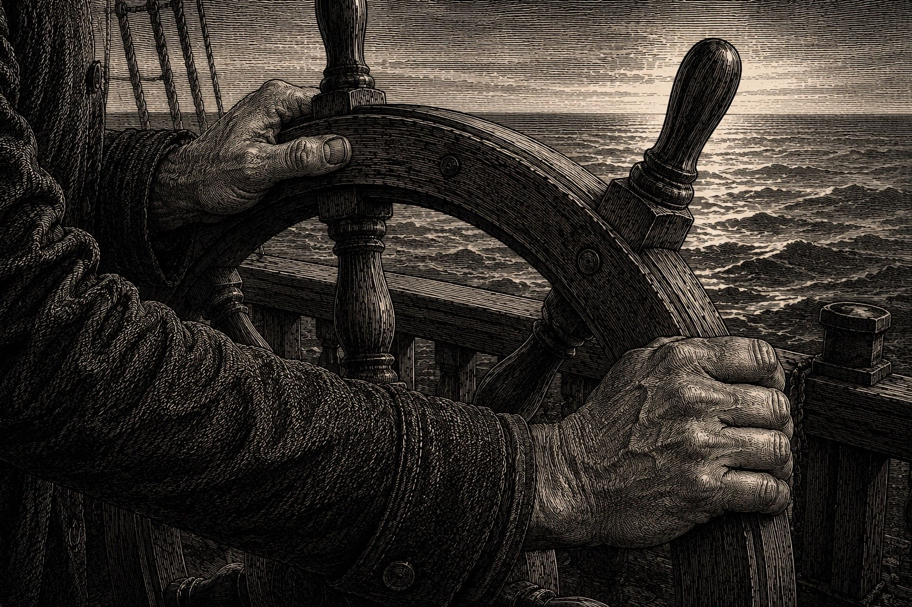
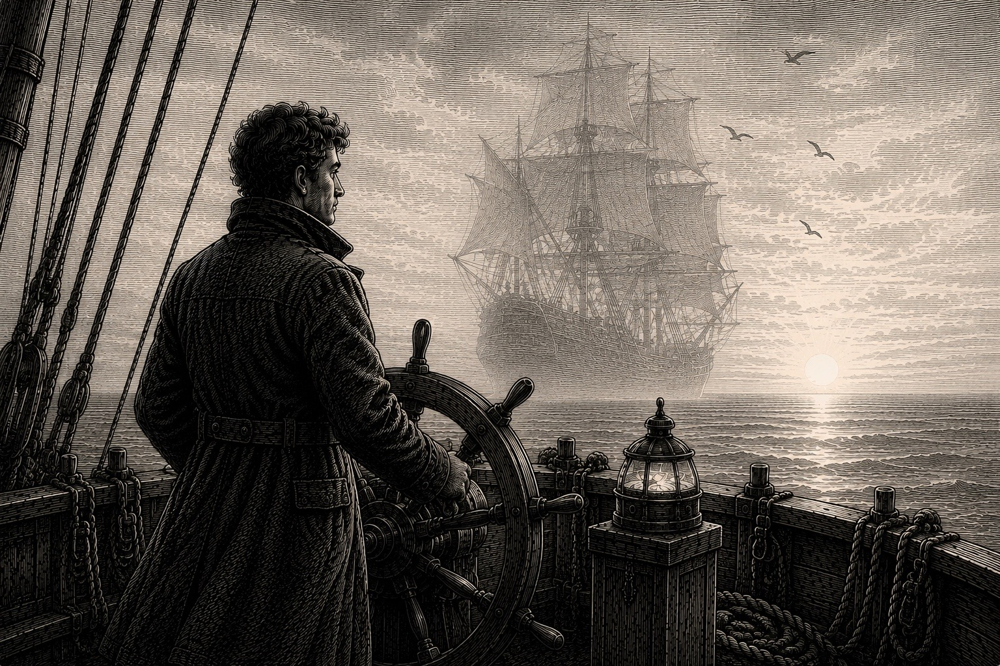
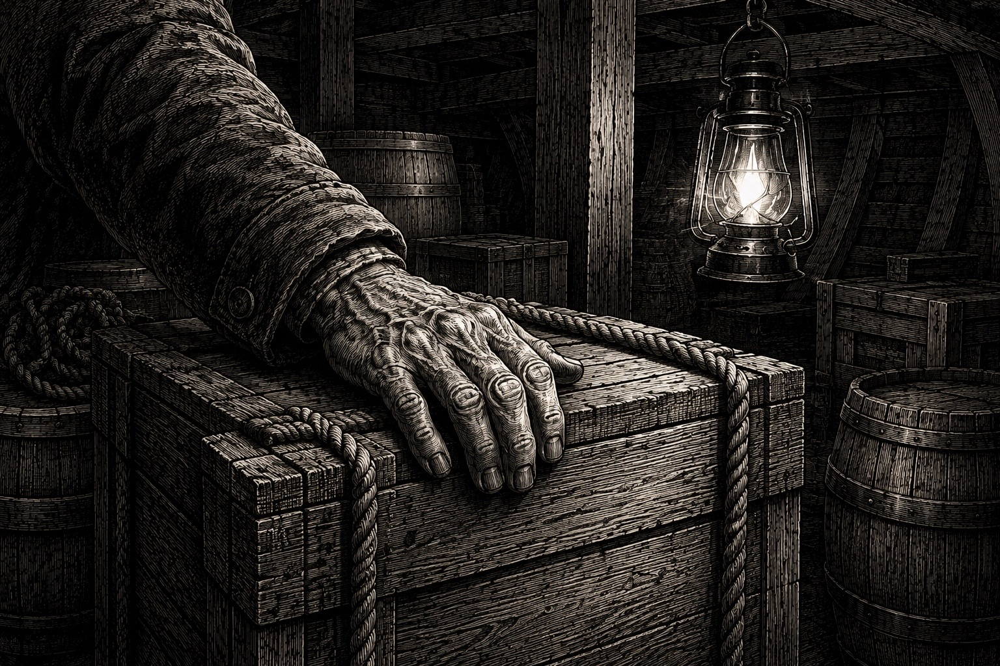
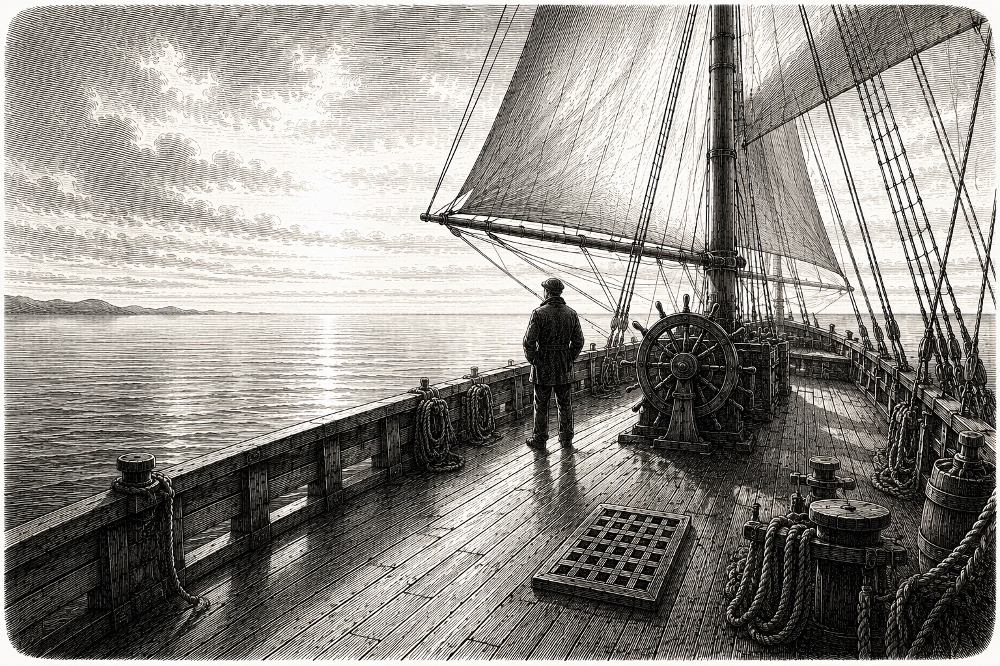
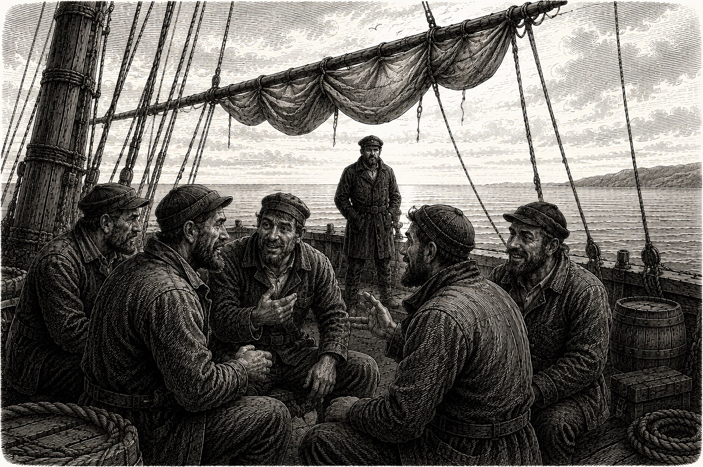
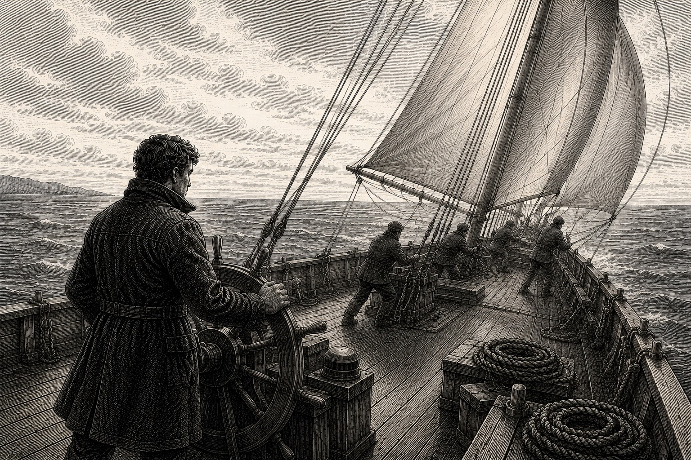
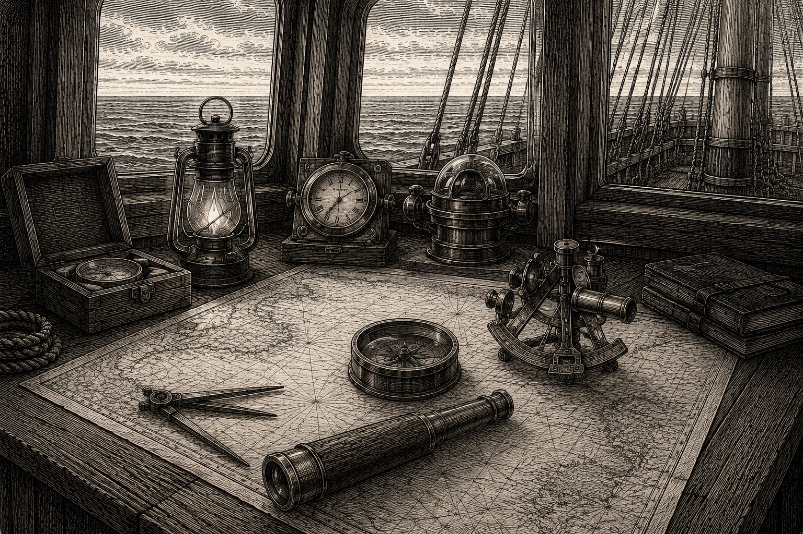
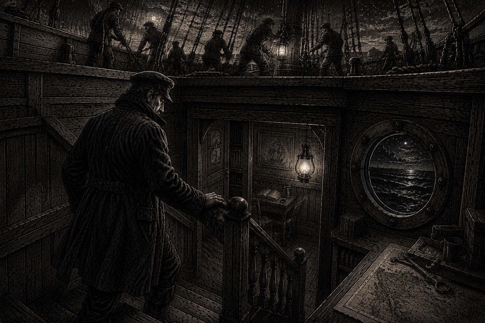
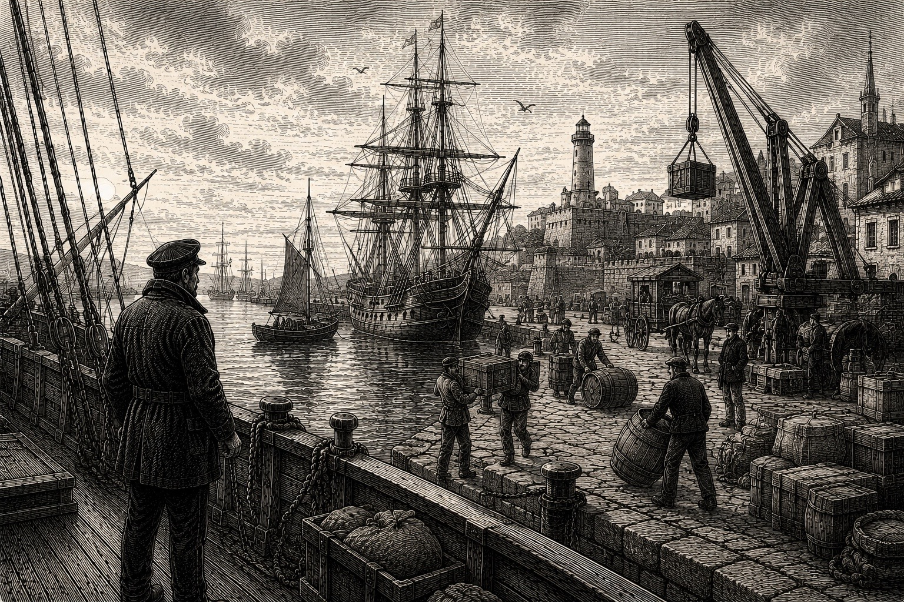

LE CALME SUR LE PONT
Chroniques maritimes sur le bruit du monde
et la sérénité des horizons
Coécrit au fil d'un voyage avec Claude, Gemini et ChatGPT.
met tour à tour le cap sur des points différents. »

Bien avant que le navire ne prenne le large, il faut comprendre une chose essentielle : le Capitaine n'est pas un individu seul, mais une fonction. C'est une part de nous-mêmes, un état d'esprit que l'on enfile comme une vareuse lorsque les vents forcent ou, lorsque la mer devient d'huile. Sur ce navire, le rôle du Capitaine n'est pas de tout diriger, mais de protéger la « cabine ». C'est cet endroit, réel ou symbolique, où l'on se réfugie pour préserver sa clarté, anticiper les courants plutôt que subir chaque clapotis, et ne pas laisser le tumulte du pont dicter la route. Certains d'entre nous sont des Capitaines nés : ils excellent dans l'action brute, là où la tempête exige des décisions immédiates. Ils sont les rois du large, les maîtres des manœuvres complexes. Pourtant, ces mêmes Capitaines se trouvent parfois démunis face au calme plat, où l'absence d'urgence devient une source d'angoisse.
Ce livre n'est pas le récit d'une personne en particulier, mais le voyage d'une conscience. Il explore cette quête permanente : comment rester maître de son cap, que l'on soit en pleine tempête ou dans le silence des jours sans vent. À travers ces chroniques, le Capitaine observe, prépare, protège et veille. Mais il découvre surtout que le véritable leadership ne consiste pas à être le plus fort dans la tourmente, mais celui qui, par sa présence apaisée, permet à l'équipage de naviguer avec sérénité.
Peu importe qui tient la barre, ce qui compte, c'est de savoir quand se retirer dans sa cabine et quand décider, en toute conscience, que le navire est prêt à affronter l'océan.

Bien avant que notre Capitaine ne tienne la barre, un autre navire ouvrait la route. C'était un bâtiment imposant, connu de tous les marins de la région. Lorsque les vents forçaient ou que les brumes recouvraient la mer, sa simple présence suffisait souvent à rassurer les autres équipages.
Pendant des années, il traversa les saisons sans jamais quitter sa mission. Puis vint le jour où il prit la direction du large. Sa silhouette s'éloigna peu à peu jusqu'à disparaître derrière l'horizon.
La mer resta la même. Les vents continuèrent de souffler. Les étoiles poursuivirent leur course au-dessus des mâts. Mais pour ceux qui restaient, quelque chose avait changé.
Les navires durent apprendre à poursuivre leur route sans ce repère familier. Parmi eux se trouvait un jeune capitaine. Il n'avait ni l'expérience ni la renommée de son prédécesseur. Pourtant, il possédait une qualité particulière : il observait.
Il remarquait les détails que d'autres laissaient passer. Une voile légèrement détendue. Un cordage usé. Un changement de vent presque imperceptible. Une réserve qui diminuait plus vite que prévu.
Avec les années, cette attention constante devint une habitude. Chaque soir, il préparait le lendemain. Chaque traversée commençait bien avant le départ. Peu à peu, les marins apprirent à lui faire confiance. Et lorsqu'ils regardaient sa manière de tenir le cap, certains retrouvaient parfois quelque chose de familier. Comme un sillage ancien qui continuait d'avancer sous la surface. Comme un héritage transmis par la mer elle-même.

Le soleil n'était pas encore levé lorsque le Capitaine monta sur le pont. Une légère brume flottait au-dessus de l'eau. Le port sommeillait encore tandis que les derniers préparatifs du départ s'achevaient dans le calme.
Comme avant chaque traversée, il parcourut lentement le navire. Il observa les amarres. Examina les voiles. Inspecta les cales. Vérifia les réserves. Ce rituel pouvait sembler excessif. Pourtant, il remarquait souvent ce que personne d'autre n'avait vu.
Ce matin-là, une caisse de matériel avait été arrimée du mauvais côté de la cale. L'erreur paraissait insignifiante. Elle fut simplement déplacée. Quelques heures plus tard, la mer se forma davantage que prévu. Le navire prit de la gîte. Plusieurs chargements glissèrent légèrement sous l'effet du roulis. Tous, sauf celui qui avait été corrigé avant le départ.
La traversée se poursuivit sans incident. Au fil de la journée, le Capitaine fit également remplacer une poulie qui commençait à fatiguer, vérifier les réserves d'eau douce et renforcer un cordage dont les fibres montraient des signes d'usure. Rien d'extraordinaire. Seulement une succession d'ajustements modestes.
Lorsque le soleil commença à disparaître derrière l'horizon, le navire poursuivait sa route avec la même régularité qu'au matin. Le Capitaine tenait la barre en silence. Au loin, quelques oiseaux tournaient lentement au-dessus des vagues. Il observa leur trajectoire et modifia légèrement le cap. Personne ne posa de question. À bord, chacun savait désormais que certaines difficultés étaient souvent résolues bien avant d'apparaître.

La mer était si calme que les nuages semblaient flotter à sa surface. Depuis l'aube, le navire avançait sous un vent régulier. Les voiles étaient parfaitement établies. Les cordages demeuraient immobiles. Rien ne troublait la traversée.
Pourtant, le Capitaine continuait à parcourir le pont. Il vérifiait les amarres. Puis les réserves. Puis les voiles. Puis les lanternes. Puis revenait vers les amarres. Autour de lui, tout fonctionnait pourtant comme prévu. Les marins occupaient leurs postes. Le mécanicien entretenait son matériel. Les hommes de quart surveillaient l'horizon. Le navire avançait sans difficulté.
Au fil de la matinée, le Capitaine ralentit peu à peu son pas. Il observa simplement le travail de l'équipage. Les gestes étaient précis. Les habitudes bien installées. Le bateau semblait connaître sa route autant que ceux qui le dirigeaient. Alors, pour une fois, il s'accorda quelques instants de repos près de la barre.
Le soleil poursuivit sa course. La mer demeura paisible. Personne ne courut. Personne n'éleva la voix. Le navire continua son voyage avec la même assurance.
Au coucher du soleil, le Capitaine regarda les voiles teintées d'or. Il réalisa que le navire avait parfaitement poursuivi sa route sans qu'il ait eu besoin d'intervenir à chaque instant. Les marins avaient accompli leur travail. Les voiles avaient porté le bâtiment. Le vent avait soufflé comme prévu. Et la mer semblait savoir exactement ce qu'elle avait à faire.

La journée avait commencé comme beaucoup d'autres. Un vent léger soufflait du large. Le ciel était dégagé. Le navire avançait régulièrement.
Au milieu de la matinée, une voile se coinça légèrement dans un cordage usé. L'incident était mineur. Le bateau poursuivait sa route. Le vent restait favorable. Le cap ne changeait pas.
Pourtant, l'information circula rapidement d'un bout à l'autre du navire. À mesure qu'elle se propageait, chacun y ajoutait ses suppositions. On évoqua des retards. Des complications. D'autres problèmes qui pourraient survenir. Le sujet occupa bientôt davantage les conversations que la navigation elle-même.
Pendant ce temps, la voile restait exactement dans le même état. Ni plus ni moins. Finalement, le vieux maître d'équipage examina le cordage. La partie usée fut remplacée. Quelques minutes plus tard, tout fonctionnait de nouveau parfaitement. L'incident était terminé.
Le navire poursuivit sa route. Le soir venu, tandis que le soleil descendait lentement vers l'horizon, la traversée semblait n'avoir connu aucun événement particulier. La voile était réparée. Le vent soufflait toujours. La mer demeurait calme. Seul le bruit qui avait entouré le problème avait été plus important que le problème lui-même.
Au large, les vagues continuaient de naître puis de disparaître. Comme elles l'avaient toujours fait.

La traversée avait été préparée avec soin. Les cartes avaient été vérifiées. Les réserves chargées. Les voiles inspectées. Les cordages remplacés lorsque cela était nécessaire. Rien n'avait été laissé au hasard.
Le matin du départ, la mer était calme. Le vent soufflait dans la bonne direction. L'horizon était dégagé. Tout semblait promettre une traversée paisible. Durant les premiers jours, le navire avança exactement comme prévu. Les milles défilaient. Les quarts s'enchaînaient. Le voyage suivait la route tracée sur les cartes.
Puis, un matin, le vent changea. Rien de spectaculaire. Aucun grain à l'horizon. Aucune tempête. Simplement un vent qui décida de souffler autrement. Les voiles furent ajustées. Le navire ralentit. La progression devint moins directe. Il fallut modifier l'allure, rechercher d'autres angles, composer avec la mer.
Le Capitaine consulta les cartes. Elles étaient exactes. Il vérifia les instruments. Ils fonctionnaient parfaitement. Il observa les voiles. Elles étaient correctement réglées. Tout était en ordre. Et pourtant, le vent demeurait contraire.
Pendant plusieurs jours, la situation resta la même. Le navire avançait toujours, mais moins vite. Chaque mille parcouru demandait davantage de patience. Certains marins regardaient régulièrement l'horizon en espérant voir le vent tourner. D'autres calculaient le retard accumulé. Le Capitaine observait simplement la mer.
Il existe des traversées où rien n'est cassé. Rien n'est perdu. Rien n'est mal préparé. Et pourtant, le voyage devient plus difficile. La mer possède parfois ses propres intentions. Au fil des jours, le Capitaine comprit une chose que les cartes ne mentionnaient jamais. Préparer parfaitement un voyage ne donne pas le pouvoir de choisir le vent. Aucun marin ne commande les courants. Aucun capitaine ne décide de la météo. Tout ce qu'il peut faire est préparer son navire du mieux possible lorsque la mer est calme. Puis poursuivre sa route lorsque les conditions changent.
Un soir, alors que le soleil disparaissait derrière les vagues, le vent commença enfin à tourner. D'abord légèrement. Puis davantage. Les voiles retrouvèrent progressivement leur pleine puissance. Le navire reprit de la vitesse. L'équipage retrouva le sourire.
Le vent n'avait pas toujours soufflé dans la direction espérée. La route n'avait pas toujours été celle qui figurait sur les cartes. Et pourtant, le navire avançait toujours. Devant lui, l'horizon s'ouvrait de nouveau. Comme il l'avait toujours fait.

Depuis plusieurs jours, le navire naviguait sous un ciel changeant. Les vents restaient favorables, mais une légère brume apparaissait régulièrement à l'horizon. Rien d'inquiétant. Rien d'exceptionnel. Seulement cette fine couche grise qui effaçait parfois les repères les plus lointains.
Le Capitaine connaissait bien ces conditions. Dans ce genre de traversée, l'œil seul ne suffisait plus toujours. Il fallait faire confiance aux instruments. Le compas indiquait le cap. Les cartes confirmaient la route. Les relevés correspondaient aux prévisions. Tout était cohérent.
Pourtant, le Capitaine revenait régulièrement consulter les mêmes informations. Il vérifiait une première fois. Puis une seconde. Puis encore une autre. Chaque contrôle confirmait exactement la même chose. Le navire suivait sa route.
Les jours passèrent ainsi. Chaque matin, les instruments donnaient les mêmes indications. Chaque soir, le navire se trouvait exactement là où il devait être. Peu à peu, le Capitaine commença à observer autre chose. Il remarqua le calme des marins, la confiance du maître d'équipage, la précision des hommes de quart. Personne ne semblait inquiet. Personne ne remettait constamment en question la direction prise. Tous accomplissaient simplement leur tâche, comme si la route était déjà connue.
Un matin, alors que la brume recouvrait encore la mer, le Capitaine resta quelques instants immobile devant le compas. L'aiguille indiquait le nord, comme elle l'avait fait la veille, comme elle le ferait probablement le lendemain. Ce jour-là, il referma la carte un peu plus tôt que d'habitude. Non parce qu'il cessait d'être prudent, non parce qu'il abandonnait sa vigilance, simplement parce que tout ce qui devait être vérifié l'avait déjà été.
Le navire poursuivit sa route. Les voiles restèrent bien orientées. Le vent demeura constant. Les instruments continuèrent silencieusement leur travail.
À la tombée du jour, la brume se dissipa peu à peu. L'horizon réapparut. Le Capitaine regarda longtemps la ligne claire où le ciel rejoignait la mer. Il comprit alors qu'il n'était pas seul à guider le voyage. Les cartes étaient là. Les instruments aussi. L'équipage également. Tout un ensemble de repères veillait déjà sur la traversée.
La nuit tomba lentement sur l'océan. Le compas continuait de pointer sa direction avec la même discrétion qu'au premier jour. Et le navire avançait toujours.

Le voyage durait depuis de nombreuses semaines. Les ports visités commençaient à se mélanger dans les souvenirs. Certaines escales semblaient proches. D'autres appartenaient déjà à une autre saison.
Le Capitaine avait connu des mers calmes, des vents contraires, des journées lumineuses, quelques nuits plus difficiles, comme tous les marins qui naviguent longtemps. Avec les années, il avait compris une chose que les jeunes capitaines découvrent rarement dès leurs premières traversées.
Un océan ne se franchit pas en une journée. Il ne se franchit pas non plus en restant continuellement debout à surveiller chaque vague. La mer est patiente. Le voyage aussi.
Certains matins, le vent pousse naturellement le navire. D'autres jours, il faut accepter d'avancer plus lentement. Parfois, il suffit simplement de tenir le cap. Au fil du temps, le Capitaine apprit à respecter ce rythme. Il continua à observer, à préparer, à anticiper. Mais il apprit aussi à s'économiser, à laisser l'équipage prendre le quart, à partager certaines responsabilités, à accepter que chaque instant ne dépende pas uniquement de lui.
Un soir d'été, alors que la mer était particulièrement calme, il resta longtemps à regarder le soleil disparaître derrière l'horizon. Les voiles se découpaient en ombres noires sur le ciel rougeoyant. Le navire avançait paisiblement. Les hommes occupaient leurs postes. Tout semblait à sa place.
Pour la première fois depuis longtemps, le Capitaine quitta le pont avant la tombée complète de la nuit. Il descendit lentement vers sa cabine. Derrière lui, rien ne s'arrêta. Le vent continua de souffler. Les vagues continuèrent de porter le navire. Les marins poursuivirent leur veille. La traversée continua.
Quelques heures plus tard, lorsqu'il remonta sur le pont, les premières lueurs de l'aube apparaissaient déjà à l'est. Le navire avait parcouru plusieurs milles. La route était bonne. Le cap était maintenu. L'océan s'étendait toujours devant eux.
Le Capitaine observa l'horizon puis esquissa un léger sourire. La mer n'avait pas eu besoin de lui pendant chaque minute de la nuit. Et pourtant, le voyage avançait toujours. Le navire poursuivait sa route vers le large. Comme il l'avait toujours fait. Comme il continuerait encore longtemps à le faire.
Le Capitaine savait qu'un navire ne tient pas la mer grâce à la seule vigilance de son équipage. Il tient grâce à tout ce qui a été préparé avant le départ. Les cartes rangées à leur place. Les réserves vérifiées. Les cordages entretenus. Les habitudes transmises de quart en quart.
Parfois, le second venait le trouver avec un regard soucieux. Il évoquait une absence prochaine. Un marin qui pourrait quitter l'équipage. Une réparation qui prendrait du retard. Un imprévu qui, peut-être, compliquerait la traversée. Le Capitaine l'écoutait attentivement. Puis son regard retournait vers le navire. Vers les voiles. Vers les haubans. Vers cette multitude de détails invisibles qui reliaient les hommes entre eux.
Il savait qu'aucun marin n'était interchangeable. Chacun apportait son expérience, ses habitudes et sa manière d'accomplir sa tâche. Mais il savait également autre chose. Si un navire devait sombrer parce qu'un seul homme quittait son poste, alors la fragilité se trouvait peut-être ailleurs. Un bâtiment solide ne repose jamais sur une seule pièce. Pas plus qu'une traversée ne dépend d'un seul marin.
Depuis des années, le Capitaine s'efforçait de transmettre ce qu'il savait. De documenter les routes. D'expliquer les manœuvres. De préparer ceux qui prendraient un jour la relève. Non pour remplacer les hommes. Mais pour que le voyage puisse continuer.
Au fil du temps, il avait compris qu'il existait deux manières de naviguer. La première consistait à craindre sans cesse la prochaine difficulté. La seconde consistait à renforcer progressivement le navire. Le Capitaine ne passait pas ses journées à imaginer les tempêtes qui pourraient survenir. Il préférait vérifier les amarres, entretenir les voiles, observer l'horizon et préparer le lendemain.
Au coucher du soleil, il resta quelques instants appuyé contre le bastingage. Le navire poursuivait sa route avec régularité. Les hommes occupaient leurs postes. Le mousse, devenu officier, dirigeait désormais une partie du quart avec assurance.
Le Capitaine esquissa un léger sourire. Les amarres les plus solides ne sont pas toujours celles que l'on voit. Certaines relient simplement les hommes, les savoirs et le temps.
Parfois, lorsque la mer était calme et que l'horizon semblait s'étendre à l'infini, le Capitaine songeait aux autres navires. Certains avaient partagé une partie de sa route. D'autres étaient partis du même port. D'autres encore avaient navigué à ses côtés pendant plusieurs saisons avant que les courants ne les entraînent ailleurs.
Avec les années, leurs silhouettes avaient disparu derrière d'autres horizons. Il n'y avait eu ni tempête. Ni conflit. Ni naufrage. Simplement le mouvement naturel de la mer. Les courants ne demandent jamais leur avis aux marins. Ils emmènent certains navires vers des eaux chaudes. D'autres vers des côtes lointaines. Parfois, deux bâtiments quittent le même quai et finissent par naviguer à des milliers de milles l'un de l'autre.
Le Capitaine avait longtemps cru que les routes devaient rester parallèles pour que les liens demeurent. Puis la mer lui avait appris autre chose. Les navires n'ont pas besoin de se voir pour partager une histoire. Ils n'ont pas besoin d'accoster dans les mêmes ports pour avoir appartenu au même voyage.
Le bois garde la mémoire des chantiers qui l'ont vu naître. Les cartes gardent le souvenir des routes parcourues ensemble. Et certains liens continuent d'exister bien après que les horizons se sont séparés.
Un soir, tandis que le soleil disparaissait lentement derrière les vagues, le Capitaine regarda la ligne où la mer rejoignait le ciel. Au-delà de cet horizon naviguaient peut-être encore d'autres navires qu'il avait connus autrefois. Il n'éprouvait ni regret ni attente. Seulement une forme de gratitude tranquille. Ils avaient partagé un morceau d'océan. C'était déjà beaucoup.
La nuit tomba peu à peu sur la mer. Les étoiles apparurent une à une. Et quelque part, bien au-delà de ce qu'il pouvait voir, d'autres Capitaines poursuivaient eux aussi leur traversée.

Le soleil descendait lentement derrière les quais. Le navire était amarré depuis plusieurs heures. Les voiles avaient été pliées. Les cordages reposaient sans tension. L'équipage avait quitté le pont depuis longtemps. Quelques mouettes tournaient encore au-dessus du port.
Le Capitaine resta seul quelques instants à observer la mer. Au loin, l'horizon se confondait avec le ciel du soir.
Il repensa aux traversées passées. Aux vents favorables. Aux tempêtes. Aux longues nuits de veille. Aux routes parcourues. Le navire avait changé. L'équipage aussi. Et lui également.
Il y avait eu un temps où il croyait devoir surveiller chaque corde, chaque voile et chaque mouvement de la mer. Aujourd'hui, le bateau reposait paisiblement contre le quai. Solide. Fiable. Prêt pour d'autres voyages.
Le Capitaine regarda une dernière fois l'horizon. Puis il quitta le pont. Derrière lui, le navire demeura immobile. Comme s'il lui rappelait doucement qu'il savait désormais tenir la mer lui aussi.
Après avoir quitté le pont, le Capitaine alla marcher le long de la côte. Il observait les navires entrer et sortir du port. Certains appareillaient pour leur première traversée. D'autres revenaient de mers lointaines. Tous semblaient occupés par leur propre voyage.
Au bout de la jetée se dressait un vieux phare. Depuis des années, il faisait face aux vents, aux marées et aux saisons. Le Capitaine s'y arrêtait parfois. Il regardait sa lumière balayer lentement l'horizon.
Le phare ne dirigeait aucun navire. Il ne donnait aucun ordre. Il ne corrigeait aucune manœuvre. Il ne choisissait ni la route ni la destination. Et pourtant, des générations de marins s'étaient appuyées sur lui. Par les nuits sans lune. Dans les brumes épaisses. Au milieu des tempêtes. Sa présence suffisait.
Avec le temps, le Capitaine comprit quelque chose qu'aucune traversée ne lui avait réellement enseigné. Toute sa vie, il avait cru que son rôle consistait à tenir la barre. À préparer. À anticiper. À décider. Puis il avait appris à transmettre. À déléguer. À laisser d'autres prendre le quart.
Le phare lui révéla une dernière leçon. Il existe une différence entre guider et contrôler. Certaines présences éclairent davantage qu'une multitude d'actions. Certaines lumières n'ont pas besoin de quitter leur place pour aider ceux qui naviguent au loin.
Le Capitaine resta longtemps à observer le faisceau qui balayait silencieusement la mer. Au large, quelques voiles apparaissaient puis disparaissaient dans la nuit. Chacune poursuivait sa propre route. Le phare, lui, demeurait immobile. Il ne retenait personne. Il n'appelait personne. Il était simplement là. Et cela suffisait.
Lorsque le Capitaine reprit son chemin, il ne regarda pas derrière lui. La lumière continuait de tourner lentement au-dessus des vagues. Comme elle l'avait toujours fait. Comme elle continuerait longtemps après lui.